This data is called the raw data of the gender variable which is a categorical variable.
If you counted the number of ‘male’ students and ‘female’ students in the above raw data and reported the result as shown in Table 2.2.1.
Table 2.2.1 Summary data of the gender in a class
Gender
Students
Male
6
Female
4
This data is called the summary data of the gender variable.
If the number of data increases, counting the number of cases in each category from the raw data of a categorical variable in order to make the summary data is not an easy task. One of the important functions of a statistical package is to organize the raw data into the summary data by counting the number of cases in each category. Because of this difficult task to generate the summary data from the raw data, governmental institutions usually provide statistics of a census to the public in the form of the summary data such as the number of population by gender or the number of population by region. These summary data can be downloaded from the governmental home page as an Excel file.
An Excel file can be saved as a text file in CSV (comma separated value) format (refer <Figure A.2.6> in Appendix A) which can be loaded by 『eStat』 for data processing and analysis (refer Appendix A).
This section discusses visualization of the summary data of a categorical variable which can also be found in textbooks of an elementary, a middle school, a high school and in governmental publications.
Example 2.2.1(Gender Summary Data)
Enter the summary data of Table 2.2.1 to the sheet of 『eStat』 and save it as a file in CSV format. Using this data, draw a bar graph, a pie chart and a band graph with 『eStat』. Analyze the graphs and prepare a report using the MS Word (or any word processor you prefer).
Answer
Enter the data of Table 2.2.1 to the sheet of 『eStat』 as in <Figure 2.2.1> and enter a variable name of V1 as ‘Gender’ and of V2 as ‘Number’ using [Edit Var] button located above the sheet (refer Appedix A.2).
<Figure 2.2.1> Data input in 『eStat』
Click the first variable name 'Gender' and then the second variable name 'Number'.
Selected variables will be appeared in the box of the 'Selected Var' located above the sheet.
You can select the variable ‘1: Gender’ using the combo box of the 'Analysis Var'
and the variable ‘2: Number’ using the combo box of the 'By Group' located above the sheet as shown in <Figure 2.2.1>.
When variables are selected, a vertical bar graph which is the default graph of 『eStat』 is drawn as in <Figure 2.2.2>.
The height of each bar (rectangle) is proportional to the frequency of each category in the gender variable and therefore the frequencies of both the male and the female categories can be easily compared by watching the heights of bars. The bar graph shows that the number of male students is larger than the number of female students.
A vertical bar graph which draws bars up and down as in <Figure 2.2.2> is widely used, but a horizontal bar graph which draws bars from left to right is often used if there are many categories. By clicking on the horizontal bar graph icon located above the Graph Area, a horizontal bar graph as in <Figure 2.2.3> will be appeared in the Graph Area. By checking the ‘Frequency’ box located below of the graph, the frequency of each bar. will be displayed.
<Figure 2.2.2> Vertical bar graph of the number of male and female students.
<Figure 2.2.3> Horizontal bar graph of the number of male and female students.
By clicking the ‘Graph Save’ icon located above the Graph Area, the current graph of the Graph Area will be saved with a file name ‘eStatGraph.png’ which is shown at the bottom left corner of the main screen as in <Figure 2.2.4> (Refer Appendix A.4).
<Figure 2.2.4> Graph is saved by clicking the ‘Graph Save’ icon
The location of the saved graph file is the download folder specified in your computer system. If you save another graph, eStatGraph(1).png will be created in the download folder. Number in parentheses of the file name will be increased whenever you save a new graph.
You can copy this graph file from the download folder and paste to the MS Word as in <Figure 2.2.5>. You can also write comments about the graph if necessary.
<Figure 2.2.5> Copied graph file of 『eStat』 to MS Word
Click on the pie chart icon
to display a pie chart as in <Figure 2.2.6>
and click on the doughnut graph icon
to display a doughnut graph as in <Figure 2.2.7> which is a pie chart but a small middle circle is cut off.
The pie chart shows frequencies of the number of both male and female students by dividing a pie (circle) into pieces
with two colors depending on angles which are proportional to the frequencies of each category.
<Figure 2.2.6> Pie chart of the number of male and female students.
<Figure 2.2.7> Doughnut chart of the number of male and female students.
Click on the band graph icon
to display a band graph as in <Figure 2.2.8>. A band graph is a variant of the pie chart
by dividing a rectangle into square pieces which are proportional to frequencies of each category. It is named after a rectangular shape with multiple square pieces which looks like a band.
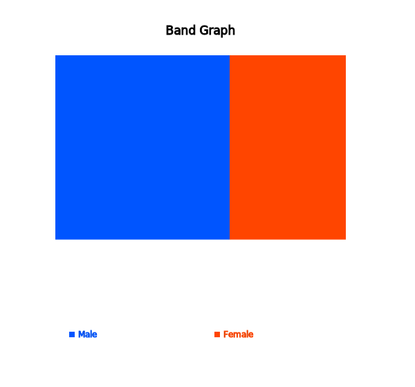
<Figure 2.2.8> Band graph of the number of male and female students.
International institutions such as UN, OECD and EU release their statistics to the public in the form of summary data and this data can be downloaded as an Excel file or a text file in CSV format. The following example shows how to download a file from the OECD and how to draw graphs using this file.
Example 2.2.2(Life Expectancy at Birth : Source OECD)
From the home page of the OECD, https://www.oecd.org, download a data file of the life expectancy at birth.
Copy the columns of the country name and 2017 data located at the last column to 『eStat』 system and save it as a file in CSV format.
Using this data, draw a vertical bar graph and a horizontal bar graph in descending order of the life expectancy. Analyze the graphs.
Answer
The main screen of the OECD website as of December 2020, https://www.oecd.org, looks like as in <Figure 2.2.9>.
<Figure 2.2.9> OECD home page
Select the menu Topics > Health, then the screen as in <Figure 2.2.10> will be appeared.
<Figure 2.2.10> OECD ‘Topic’ > ‘Health’ menu
If you click on ‘Explore all our data on health’, the screen as in <Figure 2.2.11> will be appeared.
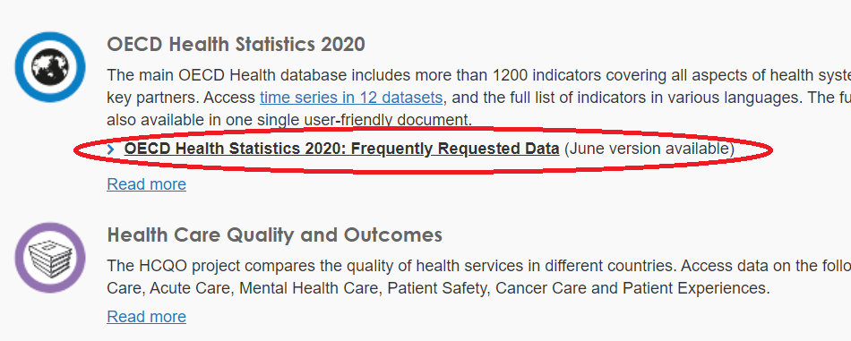
<Figure 2.2.11> OECD Statistics for life expectancy at birth
If you click on ‘> OECD Health Statistics 2020: Frequently Requested Data’, an Excel file of
OECD-Health-Statistics-2020-Frequently-Requested-Data.xls is downloaded. If you open the Excel file,
the menu as in <Figure 2.2.12> is appeared.
<Figure 2.2.12> OECD Statistics for life expectancy at birth
If you click on ‘Life expectancy at birth, total population’ in Health status (Mortality), an Excel file as in <Figure 2.2.13> will be appeared on the screen.
<Figure 2.2.13> OECD Statistics for life expectancy at birth
The easiest way to make a file in CSV format is to copy the country name to the first column of the sheet of 『eStat』 and the column of 2017 data located at the last column of this Excel file to the second column of the sheet of 『eStat』 as in <Figure 2.2.14>. After you provide variable names ‘Country’ and ‘Years’ by using [Edit Var] of 『eStat』 , save the data as a file, for example, ‘EX020202_OECD_LifeExpectancy.csv’ in CSV format,.
<Figure 2.2.14> OECD life expectancy at birth in 2017
Another way is to edit the Excel file in <Figure 2.2.13> with only two columns, the country name and 2017 data similar to <Figure 2.2.14>, and save it as a file in CSV format. In this case, the first row should have variable names such as ‘Country’ and ‘Number’ (refer Appendix A.2).. In order to save this file in CSV format, select the Excel menu ‘File’ > ‘Save As’, then a dialogue box as in <Figure 2.2.15> will be appeared. Select the option ‘CSV Utf-8’, then the file will be saved in CSV format in the download folder of your computer. Note that, if you are using an European version of Excel, you have to change the delimiter of semicolon ‘;’ with comma ‘,’ before you save the file (refer Excel option).
<Figure 2.2.15> OECD
Click the variable names ‘Country’ and ‘Number’ on the sheet of 『eStat』 , then a vertical bar graph of the life expectancy will be appeared as in <Figure 2.2.16>. If the characters of the country name are too small to see, you can enlarge the screen by holding the [Ctrl] key and rolling up the wheel mouse. You can click on the horizontal bar graph icon located above the Graph Area to draw a horizontal bar graph as in <Figure 2.2.17>.
It is sometimes convenient to compare data using a horizontal bar graph after sorting. If you check a sorting option ‘Descending’ located below the graph, a horizontal bar graph sorted by descending order of the life expectancy at the birth will be appeared as in <Figure 2.2.17>. It is easy to check that Japan is the longest life expectancy, Switzerland is the second and Latvia is the shortest.
<Figure 2.2.16> Vertical bar graph of OECD life expectancy at birth in 2017
<Figure 2.2.17> Horizontal bar graph of OECD life expectancy at birth, 2017
Practice 2.2.1(Alcohol Expenditure: OECD)
Draw a bar graph using the following data in 『eStat』 system and analyze the graph.
2.2.2 Summary Data of Categorical Variable with Group
The summary data as in Table 2.2.1 can be easily extended if you survey the gender of two classes in a school as in Table 2.2.2. It is the summary data of the gender variable for two classes (groups), classes of 5-1 and 5-2. In this case, we usually want to compare the summary data between two classes (groups) using graphs as the following example.
Table 2.2.2 Summary data of two classes
Gender
5-1
5-2
Male
16
12
Female
14
18
Example 2.2.3(Gender Summary Data of Two Classes)
A file of the summary data in Table 2.2.2 is saved at the following location of 『eStat』 system.
[Ex] ⇨ eBook ⇨ EX020203_Summary_StudentByGender
Using this data, draw a bar graph, a pie chart and a band graph. Use 『eStat』.
Answer
If you load the data file from 『eStat』 , it looks like as in <Figure 2.2.18>.
<Figure 2.2.18> Load file of summary data
Click the variable names 'Gender', ‘5-1’ and ‘5-2’ sequentially, then the selected variables will be appeared at the box of 'Selected Var' located above the sheet. You can select the variable ‘1: Gender’ using the combo box of the 'Analysis Var' and the variable ‘2: 5-1’ and ‘3: 5-2’ using the combo box of the 'By Group' located above the sheet.
When the variables are selected, a vertical bar graph
which is the default graph of 『eStat』 is drawn
using the number of male and female students in both classes as in <Figure 2.2.19>. A bar graph is drawn for each class and the heights of bars are the frequencies of male and female students. Two bar graphs has the same scale of Y-axis and therefore the frequencies of each class can be easily compared. This bar graph is called a separated vertical bar graph for each class.
By clicking the horizontal bar graph icon
,
a separated horizontal bar graph can be drawn as in <Figure 2.2.20>
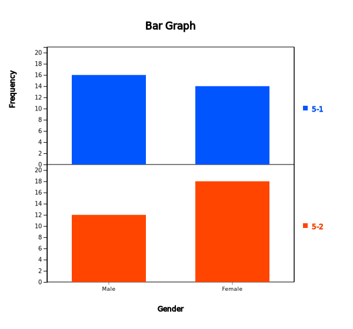
<Figure 2.2.19> Separated vertical bar graph of the gender distribution by class.
<Figure 2.2.20> Separated horizontal bar graph of the gender distribution by class.
For the summary data of two groups, there are many variants of showing bar graphs
in order to compare two groups visually well.
If you click on the stacked bar icon either vertical
or horizontal
,
a stacked bar graph is drawn that divides a single bar into pieces with different colors which are proportional to the frequencies of male and female students (<Figure 2.2.21> and <Figure 2.2.22>).
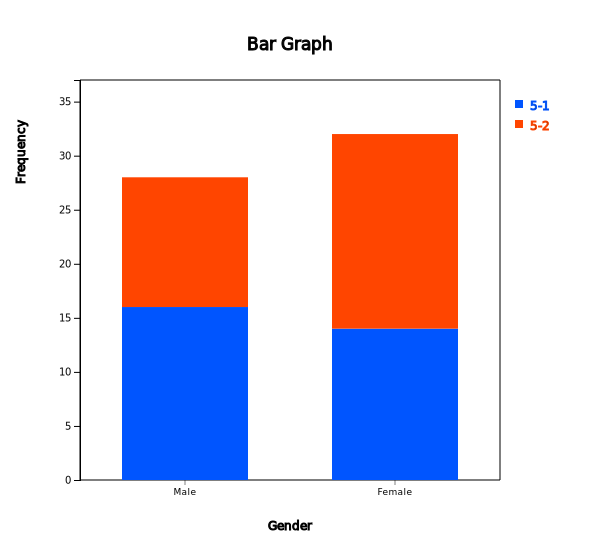
<Figure 2.2.21> Stacked vertical bar graph of the gender by class
<Figure 2.2.22> Stacked horizontal bar graph of the gender by class
If you click on the ratio bar graph icon either vertical
or horizontal
,
a ratio bar graph is drawn in which bars with the same height are divided into pieces with different colors
which are proportional to the frequencies of male and female students (<Figure 2.2.23> and <Figure 2.2.24>).
<Figure 2.2.23> Ratio vertical bar graph of the gender by class.
<Figure 2.2.24> Ratio horizontal bar graph of the gender by class.
If you click on the side-by-side icon either vertical
or horizontal
,
a side-by-side bar graph is drawn which draws the bars of each group category sideways for comparison (<Figure 2.2.25> and <Figure 2.2.26>).
<Figure 2.2.25> Side-by-side vertical bar graph of the gender by class.
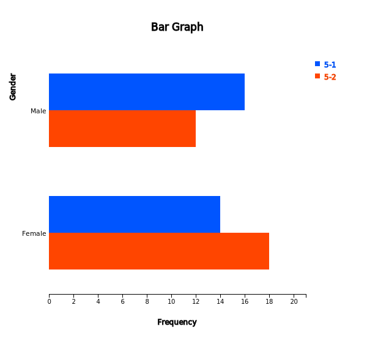
<Figure 2.2.26> Side-by-side horizontal bar graph of the gender by class.
If there are only two categories of the group variable like this example, then by clicking on the bi-lateral bar icon
either vertical
or horizontal
,
a two-sided (or bi-lateral) bar graph is drawn which draws the bars in the opposite direction either the above and below of X-axis (<Figure 2.2.27>), or the left and right of Y-axis (<Figure 2.2.28>).
<Figure 2.2.27> Two-sided vertical bar graph of the gender by class.
<Figure 2.2.28> Bi-lateral horizontal bar graph of the gender by class.
By clicking on the pie chart icon
,
a pie chart is drawn as in <Figure 2.2.29> which has two pie charts for classes of ‘5-1’ and ‘5-2’.
Each pie chart shows the frequencies of the number of male and female students by dividing a pie (circle) into pieces with two colors depending on angles which are proportional to the frequencies of each category.
By clicking on the band graph icon
,
a band graph is drawn as in <Figure 2.2.30> which has two band graphs for classes of ‘5-1’ and ‘5-2’. Each band graph shows the frequencies of the number of male and female students by dividing a rectangle into squares with two colors which are proportional to the frequencies of each category.
<Figure 2.2.29> Pie charts for gender distribution in two classes.
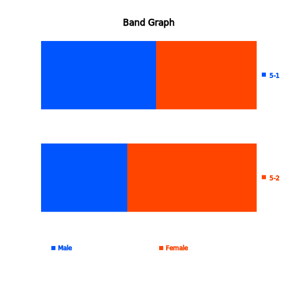
<Figure 2.2.30> Band graphs for gender distribution in two classes.
Example 2.2.4(Male and Female Population by Age Groups)
In 2015, the male and female populations by age groups in Korea are shown in Table 2.2.3. Using this data, draw a vertical bar graph by age groups and then find appropriate graphs to analyze the characteristics of this data easily.
Table 2.2.3 male and female populations by age groups in Korea
(KOSTAT Census 2015, unit 10,000 persons)
Age Interval
2015 Male
2015 Female
00 - 04
115
109
05 - 09
116
109
10 - 14
126
116
15 - 19
166
151
20 - 24
181
158
25 - 29
158
145
30 - 34
158
176
35 - 39
193
186
40 - 44
214
207
45 - 49
215
212
50 - 54
209
205
55 - 59
192
194
60 - 64
134
141
65 - 69
102
110
70 - 74
79
97
75 - 79
55
80
80 - 84
28
54
over 85
13
39
Answer
The data of Table 2.2.3 can be loaded from 『eStat』 using the following address.
Click on the variable name of the first variable, 'AgeInterval' followed by the second variable
‘2015_Male’ and the third variable ‘2015_Female'. As shown in <Figure 2.2.31>,
you may select the ’AgeInterval’ variable from the 'Analysis Var' box and ‘2015_Male' and
’2015_Female’ variables sequentially from the 'By Group box. When these variables are selected,
a separated vertical bar graph
as shown in <Figure 2.2.32> which separates the male and
female populations with the same scale of Y-axis will be appeared in the Graph Area.
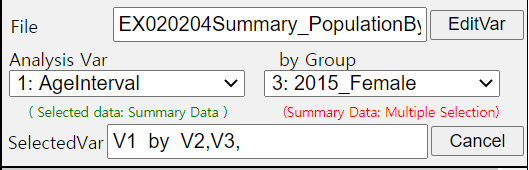
<Figure 2.2.31> Variable selection for analysis
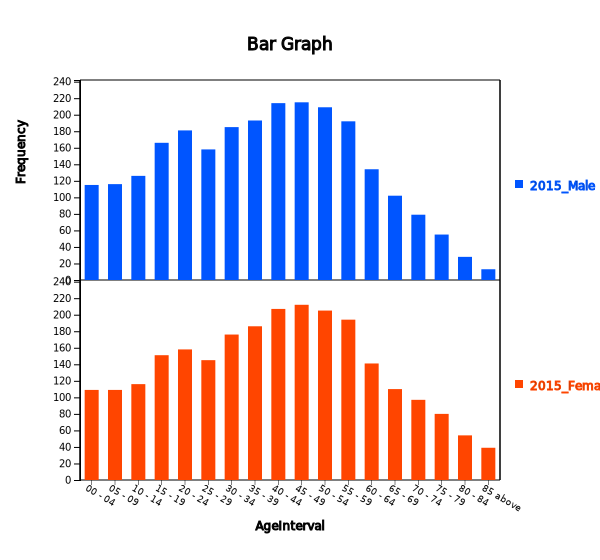
<Figure 2.2.32> Separated vertical bar graph of population by age group and by gender
Among ten possible bar graphs, a side-by-side bar graph
as <Figure 2.2.33> would be useful, because it shows the comparison of the number of male
and female populations in each age interval. A ratio bar graph
as <Figure 2.2.34> which shows directly the proportions of male and female populations in each age interval
can also be useful. In each of the graphs, you can easily see that the female population is getting larger than
the male population after the age interval of 50s and more.
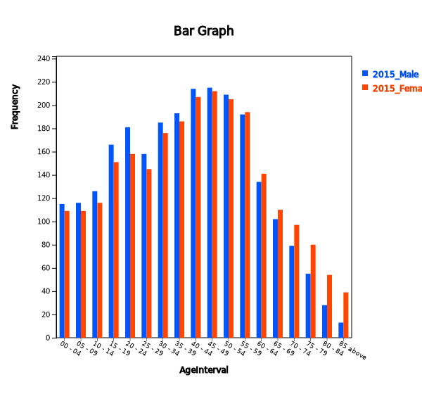
<Figure 2.2.33> Side-by-side vertical bar graph of population by age and by gender
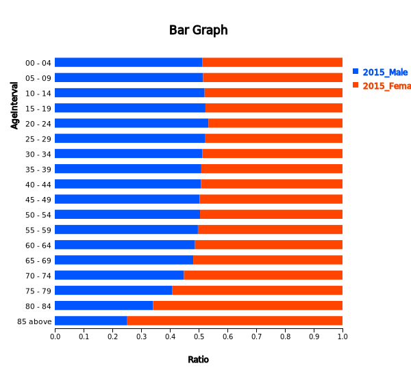
<Figure 2.2.34> Proportional horizontal bar graph of population by age and by gender
A line graph
as in <Figure 2.2.35> can also be used to see this kind of patterns.
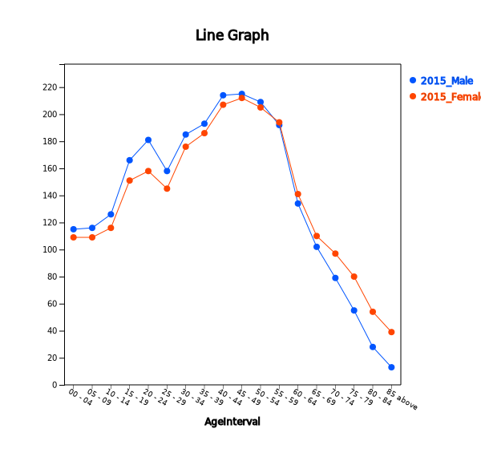
<Figure 2.2.35> Line graph of population by age and by gender
An overall distribution of the male and female populations by age group can be observed by using
a two-sided (bi-lateral) horizontal bar graph
as in <Figure 2.2.36> which is usually called a population pyramid. Currently, Korea has an age-specific population structure which looks like a jar. In other words, the population in age intervals of 40 to 50 is higher than the population in age intervals of 30 or less which is gradually decreasing. It would cause many problems in the future society such as the population decrease, the medicare budget increase etc.
<Figure 2.2.36> Bi-lateral horizontal bar graph of population by age and by gender
Practice 2.2.3(Death rates in Virginia)
For each of five age groups (50–54, 55–59, 60–64, 65–69, 70–74), death rates are measured per 1000 population per year
in Virginia. They are cross-classified by population group such as Rural/Male, Rural/Female, Urban/Male and
Urban/Female. This data are saved at the following location of 『eStat』system.
[Ex] ⇨ eBook ⇨ PR020203_Rdatasets_VADeaths.csv
Draw appropriate graphs to analyze characteristics of the data.
In general, if there are many groups (columns) on the summary data, you can compare the difference between groups for each category of the analysis variable using different kinds of graphs. If there are many groups, it is recommended that you draw several kinds of graphs, because each graph can show you different characteristics of data.
If data are observed over time, it is called a time series and a line graph is usually used to observe a trend over time. The X-axis includes values of a time variable which are spaced equally and Y-axis represents a scale of all time series data. Each pair of data, time and value is marked as a point in a two-dimensional coordinate plane and two adjacent points are connected with a line.
Example 2.2.5(OECD Export – Import by Country)
In 2017, import and export data of OECD countries are stored at the following location of 『eStat』 system.